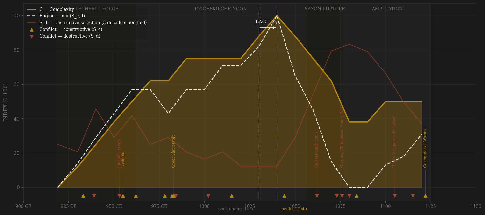
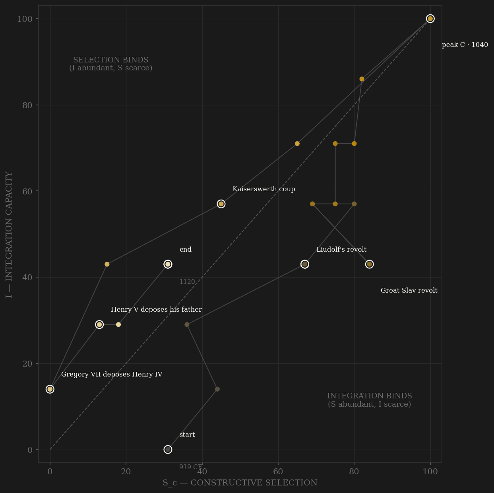

The arc opens with a king who declined anointing and ruled by friendship pacts, and closes with an assembly passing over a dynasty's heir by vote. In between, the Ottonians solved the problem every medieval polity faced — how to staff a state without breeding a hereditary aristocracy into it — by running the elite through the church: the royal chapel trained talent, the king invested it into bishoprics and abbeys, celibacy guaranteed the offices returned to the market every generation, and the servitium regis made the whole grid carry the kingdom's logistics and most of its army (the 981 muster list survives: roughly seventy percent of the armored reinforcements for Italy came from bishops and abbots). Lechfeld 955 is the founding external victory; Magdeburg and Bamberg are the purpose-built nodes; a poor Aquitanian monk climbing through the chapel to the papacy itself in 999 is the ladder's maximum documented reach. The engine peaks where the ledger says it should: the 1030s-40s, Burgundy incorporated, Goslar silver flowing, ministeriales — unfree knights, a second novel ladder recruiting below free birth — running palaces and armies, and at Sutri in 1046 the crown deposing three rival popes in synod and appointing its own chapel-men to Peter's chair. Peak complexity lands one decade later: Speyer rising as the largest church in the West, the cathedral schools at their zenith. Then the unique event in the roster. Every other polity in the sample loses its channel A from inside — rentier capture, favorite capture, hereditary freezing. Here the channel's own apex appointment (Leo IX brought Humbert and Hildebrand to Rome) generated the movement that took the channel away: Gregory VII's ban of 1075, the exchange of depositions in 1076, and the release of every subject from his oath — a bloodless act aimed at the exact center of the coordination machinery, an amputation performed from outside the polity. The machinery then made war on itself for forty-six years: an anti-king dead of his wounds at Elster, rival bishops duplicating every contested see, a son deposing his father with papal sanction. The Concordat of 1122 salvaged a reduced share — and three years later the electoral principle the dynasty rode in on rode out over its corpse.

The trajectory climbs the diagonal in a tight coupled ascent for a century and a quarter — selection and integration rising together, because in this polity they were the same institution: the Reichskirche was both the ladder and the grid, so the phase path hugs the S=I line more closely than any other polity in the sample. The 950s kink is Liudolf's revolt riding into Lechfeld; the 980s dip is Colonna and the great Slav revolt absorbed by the assemblies' finest hour. The apex sits at the Salian noon, upper right. The descent is unlike the Ptolemaic staircase: it is one long diagonal fall — when the appointment channel was contested, the integration grid (the same bishops) failed with it, and the polity slid down BOTH axes at once through Kaiserswerth, the Saxon War, and the anti-king decades. The small terminal hook rightward is real: Wurzburg 1121, Worms 1122, and the 1125 election show contest re-institutionalizing even as integration only half-recovers — the polity exits through the C channel it entered by.
Coded by locus and target, never by outcome. Two calls carry this ledger. First, 1076: Gregory VII's deposition-and-excommunication of Henry IV is S_d — bloodless (the Song Yuanyou precedent: a signature counts the same as a sword) and aimed squarely at the coordination core, since releasing subjects from their oaths dissolves the obligation network that IS Ottonian governance — but external in origin: an Alaric-rule stroke delivered by anathema rather than army, and simultaneously the amputation of channel A. The locus sits in the ledger; the mechanism sits in the channel; the uniqueness sits in the roster: no other polity's elite ladder was taken by an outside actor. Second, 983: the great Slav revolt erased the trans-Elbe church province — and is coded channel B, not S_d, because a fifty-year-old tributary march is a frontier, not a core; the Thebaid secession on the Ptolemaic page is the controlled contrast (a millennium-deep province, S_d). Degree of integration determines locus. Between those poles the ledger runs the dynasty's rhythm: external discipline won cleanly (Riade, Lechfeld, Recknitz, Menfo) against an unbroken series of succession risings (937, 953, 974, 984, 1073, 1077, 1105) — the price of electing kings was relitigating every election in arms.
| YEAR | CONFLICT | CODE | CODING RATIONALE |
|---|---|---|---|
| 933 CE | Riade | Sc | Tribute refused, the Magyars beaten in the field for the first time — external frontier discipline |
| 939 CE | Eberhard-Gilbert revolt (Andernach) | Sd | Two dukes in arms against the new king; both dead at Andernach — accession violence aimed at the throne |
| 953 CE | Liudolf's revolt | Sd | The king's son, son-in-law, and the archbishop of Mainz in arms; Mainz and Regensburg besieged; the Magyars invade through the chaos — the machinery nearly eats itself |
| 955 CE | Lechfeld | Sc | The founding B victory (Widukind III.44-49): the Magyar threat ended in an afternoon; Recknitz breaks the Obodrites the same autumn |
| 962 CE | Imperial coronation + Italian wars | Sc | The Italian-Byzantine contest opens; rivalry priced into the Theophanu marriage 972 |
| 978 CE | Franco-German war | Sc | Lothar's raid nearly takes Aachen; Otto II counter-marches to the walls of Paris — peer rivalry, frontier locus |
| 982 CE | Cap Colonna | Sc | The imperial army destroyed in Calabria by the Kalbids — external field defeat, dead margrave included (Abritus precedent: B by locus) |
| 983 CE | Great Slav revolt | Sc | Havelberg and Brandenburg destroyed, the trans-Elbe province erased — coded B NOT S_d: a 50-year tributary march is frontier, not core (contrast Thebaid secession); material loss loads on E |
| 984 CE | Seizure of the infant Otto III | Sd | Henry the Quarrelsome takes the child king and claims the throne; the assemblies at Rohr and Frankfurt face him down — S_d attempt dissolved by C machinery |
| 1002 | Election contest + Ekkehard's murder | Sd | Three-way succession contest settled within the year by election and submission (scores C); the Poehlde murder is the S_d residue — apex contest with a destructive edge (Kacha/Ramagupta precedent) |
| 1015 | Polish wars (to Bautzen 1018) | Sc | Boleslaw Chrobry's wars end with Lusatia held as the price of peace — rivalry priced, not annihilated (Chanyuan precedent) |
| 1044 | Menfo | Sc | Hungary beaten and briefly client — external contest at the hegemonic noon |
| 1062 | Kaiserswerth coup | Sd | Anno of Cologne kidnaps the boy king and the regalia and governs through possession of both — the episcopate the crown built seizes the crown |
| 1073 | Saxon War | Sd | Henry IV vs his own heartland: Harzburg razed and the royal tombs desecrated by the rebels 1074, the rising crushed at Langensalza 1075 — internal war on the coordination core. Separate ledger row, one arc annotation (3 years from the 1076 deposition; the SAXON RUPTURE phase band carries it on the arc) |
| 1076 | Gregory VII deposes Henry IV | Sd | Bloodless (Yuanyou precedent) but aimed at the core: oaths dissolved = the obligation network cut. External origin (Alaric rule by anathema) AND the amputation of channel A — the roster's only external ladder-destruction |
| 1080 | Elster (death of anti-king Rudolf) | Sd | Forchheim 1077 weaponized the electoral form into an anti-king; Rudolf dies of his Elster wounds — the machinery at war with itself in the field |
| 1084 | Rome expedition / sack of Rome | Sc | Henry crowned by his antipope; Guiscard's Normans sack Rome relieving it — external war against the Gregorian-Norman coalition, fought outside the German core. Separate ledger row from the civil wars it entangles |
| 1105 | Henry V deposes his father | Sd | The son seizes the emperor by ruse, forces abdication at Ingelheim — the apex consumed by its own succession logic, with papal sanction |
| 1115 | Welfesholz | Sd | The Saxon rising destroys the imperial army; the north closes to the crown again — internal locus |
| 1122 | Concordat of Worms | Sc | The negotiated settlement: election in the king's presence, regalia by scepter — the amputated channel salvaged at reduced share; coded as the C-channel's recovery, ticked constructive |
| COMPONENT | GRADE | BASIS |
|---|---|---|
| S_c — Constructive (v2 contestability) | ○ coded + 2 corpus anchors | A 0.40: the Reichskirche — Hofkapelle-to-episcopate pipeline (Fleckenstein 1966, prosopographic ◐), celibate non-hereditary offices, servitium regis; ministeriales as second novel ladder (Arnold 1985); amputation 1076-1122 coded as external channel loss. B 0.30 HARD CAP: Magyar/Slav/Italian/Byzantine/Polish/Hungarian/French contests from Reuter 1991, Leyser 1979/1994 chronologies. C 0.30: elections 919/936/1002/1024/1125, assembly politics (Leyser), crown synods to Sutri 1046, Landfrieden 1103, Wurzburg 1121, Worms 1122; collapses 1076-1100. No deviation from 0.4/0.3/0.3. Ledger: data/raw/ottonian/coding_ledger_v2.csv |
| S_c v1 (frozen comparator) | ○ synthesized | Channel B alone (external-war-only ordinal, min-maxed) — the prior definition's operative content per the straight-to-v2 convention |
| S_d — Destructive | ○ scholar-coded | Succession risings 937-41/953-54/974-78/984; Kaiserswerth 1062; Saxon War 1073-75 (Lampert; Bruno, De bello Saxonico); Investiture civil wars 1077-1122 (anti-kings, Doppelbesetzungen, 1093, 1105, Welfesholz 1115); the 1076 deposition-by-anathema (locus call in SOURCES.md) |
| I — Integration | ○ coded + Indiculus anchor | Itinerant kingship + Pfalz network (Bernhardt 1993); Reichskirche grid — Indiculus loricatorum 981: church = ~70% of ~2,090 listed loricati (MGH Const. I 436 ◐); Magdeburg/Bamberg/Goslar nodes; Burgundy 1032-34; decay via regency alienations, Saxony closed 1073+, two courts, Landfrieden repair |
| C — Complexity | ○ coded (silver ◐ anchor only) | Ottonian renaissance school/art arc (Bruno's Cologne, Bernward's Hildesheim, Reichenau/Trier); Magdeburg 968/Bamberg 1007; Harz silver EXISTENCE anchors only (Widukind III.63, Goslar's rise — no output series exists, stated honestly); Salian romanesque wave (Speyer ~1030-1106, the West's largest church); school decline vs France in the war decades (Jaeger); late urban arc partial offset |
| E — Entropy | ○ scholar-coded | Magyar pressure to 955; 982+983 double catastrophe; famines 992-94, 1005-06 (Thietmar VII.17), 1043-45; succession-crisis frequency; the Investiture rupture as the institutional entropy spike (schism, two kings, rival bishops per see, Rome sacked 1084) |
| R — Renewal (population, millions) | ○ coded band | ~2.8M (920) → ~4.9M (1120), McEvedy-type contour; the medieval expansion runs straight through the civil-war decades — regional devastation inside secular growth |
21 decade rows (919 off-decade founding row, then 930..1120; the 1120 row covers to Henry V's death 1125), built 2026-07-06 straight to S_c v2 by scripts/build_ottonian_sicre.py; audit trail in components_audit.csv, per-decade channel rationales in coding_ledger_v2.csv, full source map + the 1076 and 983 locus arguments in SOURCES.md. Sc_v1_combat = channel B alone (external-war-only — the prior definition's operative content), per the straight-to-v2 convention. Frozen-protocol lag (3-decade centered rolling mean, engine = min(Sc,I)) under BOTH definitions: v2 engine 1030 → C 1040 = +10 SIMULTANEOUS; v1 engine 1030 → C 1040 = +10 SIMULTANEOUS. Unsmoothed both give +0 (engine 1040 = C 1040). The v1 = v2 agreement is NOT the definitions converging: INTEGRATION is the Liebig binder through most of the polity's life, so min(Sc,I) is I-shaped under both definitions (Tokugawa precedent, inverse mechanism — there selection starved the engine, here integration capped it). Carry the ○-halo caveat in full force: this polity joins the scholar-coded SIMULTANEOUS cluster (gupta 0, achaemenid 0, sasanian 0, abbasid −10, ptolemaic +10) — the same historiographical noon feeds both codings; flagged in the methods chapter. The Investiture amputation makes this the roster's unique channel-A death mode: external actor, not endogenous decay — prime H-RENT-001 contrast case when the prereg unseals. Rebuild: build_ottonian_sicre.py, then polity_report.py --slug ottonian